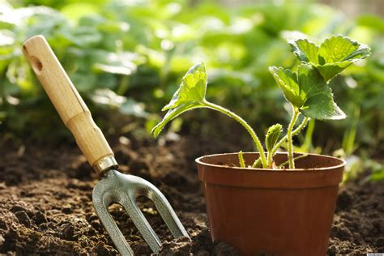
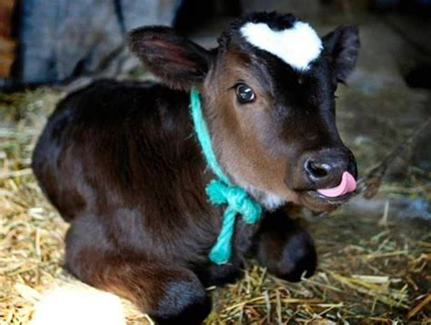

food waste

what's the issue
1.3 billion tons of food is wasted every year.
Food waste is the third largest producer of carbon dioxide after the United States and China.

why save food
Reduces your impact on the global issue.
Saves you money - a family of four could be saving up to £70 a month
Reduces packaging waste.
tips to reduce your waste
- Plan meals, buy online what you need (be honest)
- Buy odd looking fruit and veg
- Put older products at the front of the fridge
- Write down everything you throw away in one week to see what you need less of
- Plan meals around products that are going off
- Have one meal away where you challenge yourself to only eat leftovers
- Use all bits of the plant
- Get some airtight containers or use old jars to store food properly
- Repurpose scraps in stock or look up another recipe to use them up
- Donate tins you won't eat to a food
- Start a compost pile for your fruit and veg scraps and you will have your own nutrient rich soil for the garden
- See if your counsel has a food bin service for cooked or proccessed food that can't be composted
growing your own

why?
Reduces your food waste
You can save money
Gardening is mindful, reduces stress and can be really satisfying

having a herb garden
All you need is a pot and some soil to grow many different herbs in your kitchen or on a window sill. Some options are; mint, basil, thyme, lemon verbena, parsley, rosemary and sage.

How to grow veg from leftovers
You can do this with green onions, cabbage, leeks, celery, lemon grass, bok choy, ginger, coriander and many more.
GUIDLINES
Only need enough water to cover roots
Keep an eye on it in case it needs more water or the water needs changing because it is slimy
Try to use a container that is a similar shape to the food you are trying to grow
When in doubt, look it up as there are tonnes of information pages about all different types of food you can regrow
plant-based diet

why?
The meat and diary industry has many negative effects on the envrionement from carbon emmisions to resource wasting to deforestation. Reducing your meat and milk intake is the most effective way you can lower your negative envrionmental impact. To prevent the exploitation of animals
It is good for your health - a plant-based diet can reduce the risk of many diseases such as diabetes and hear problems. It can also help you loose weight and improve the quality of your skin.
It's a great time to give it a go - there are so many new plant-based options and recipes available, now is the best time to give it a go.


beginners tips
- Confirm your motivation
- Eat A LOT
- Prepare food for when you are output
- Check out food alternatives and decide which ones you like
- Have a look at documentaries to keep motivated and educate yourself further
- Arrange dinners with other vegan/veggie friends
- Look out for fun options to maintain an interesting diet
- Congratulate yourself for sticking to it, don't berate yourself too much for not.